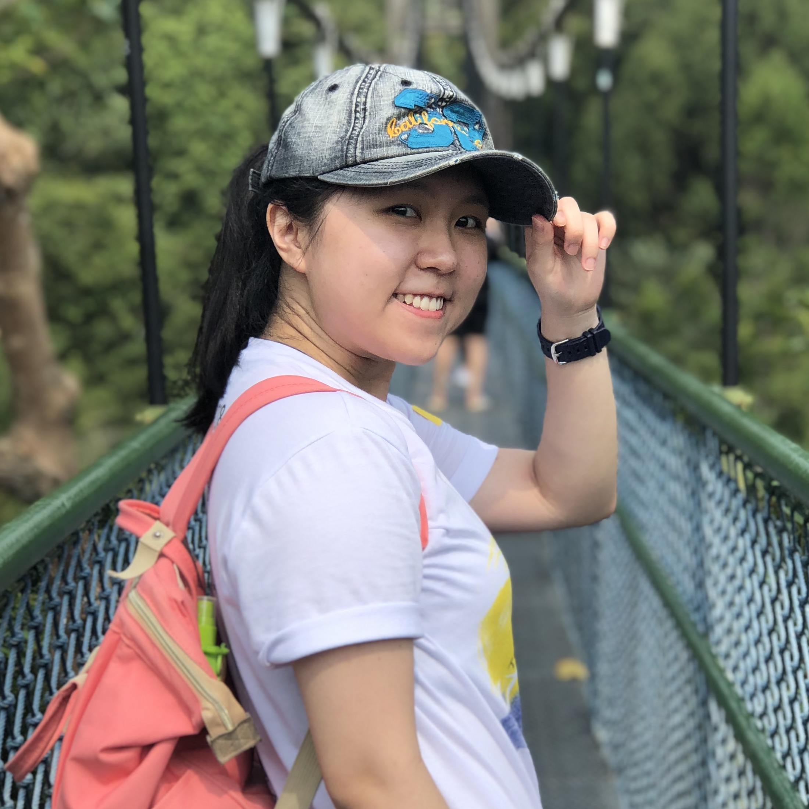
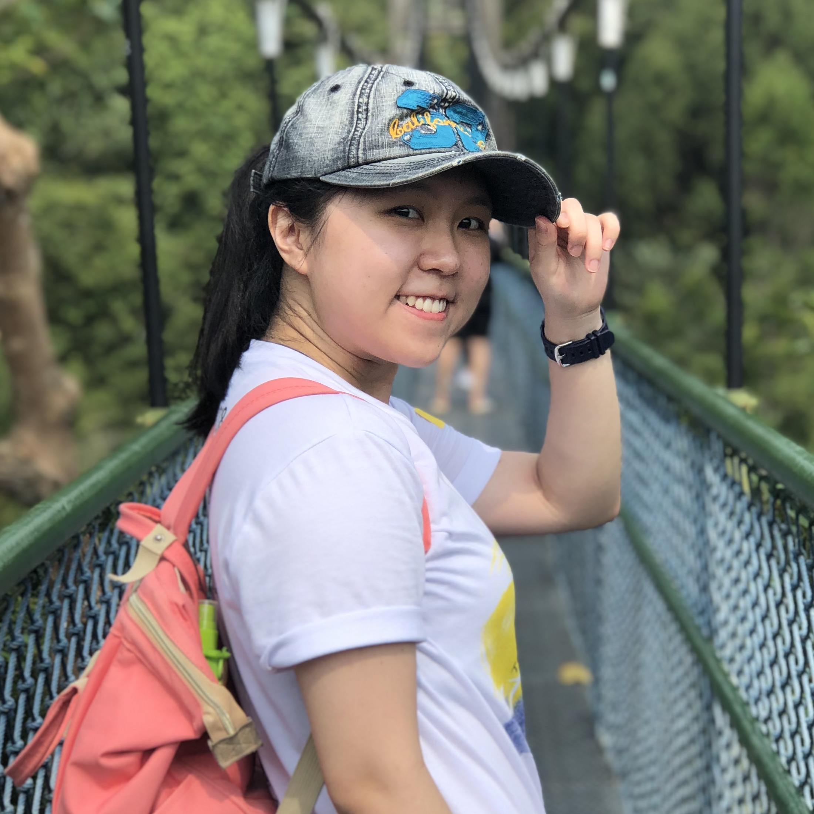

My name is Nanda Nuo'en Wang. I'm an aspiring software engineer/data scientist.
Read on to find out more about me!
About Me
My Background & Motivation
I graduated with a degree in Biomedical Engineering.
BUT. In university, I absolutely hated programming when I first learnt it. I had to take a pre-requisite module on C, and I found it extremely confusing and complicated, and I totally couldn't see where I was going with it.
Things changed when I had to built my first prototype as an engineering student.
I was insanely inspired by the power programming has to making a working prototype. Subsequently, I took on the programming role in my next design project and built a neonatal jaundice monitoring device using Arduino! The more I dwelled in Arduino, the more I fell in love with programming. However, I wasn't confident enough to pursue this interest.
After university, I took a long time to ponder on what I want to dedicate my life to as a career. After several twists and turns, here I am! I am now learning, relearning and honing my programming skills.
Fun Facts!
Usually people can't tell where I'm from by looking at my name, because honestly it has flavours from different cultures. Can you guess where I'm from? Drop me a message to tell me!
Beside programming and science, I love spending my time cooking and baking different dishes and bakes!
My Projects
Will add in later on!
Skills
- HTML
- CSS
- Javascript
- Python
- Git & Github
And more to come!
Contact Me!
Feel free to contact me! I'm very friendly and I don't bite. :>
Github: nuoen-nanda
Email: nanda.wang.ne@gmail.com